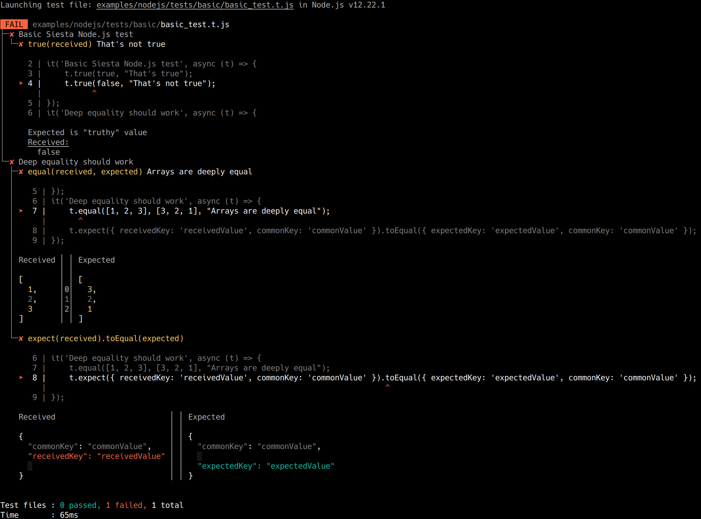

Siesta is a stress-free JavaScript/TypeScript testing tool. It is ubiquitous - tests can be run in browsers, Node.js and Deno, on Linux, macOS and Windows.
In this guide, we assume a setup, pointed toward running tests in Deno.
Installer adds --quiet to the executable arguments. This is because the diagnostic messages breaks the dynamic output of the test reporter and there's no other way to intercept/suppress them. The --no-check option is recommended for speed, --unstable is required for WebWorker feature.
deno install -n siesta -A -q --unstable --no-check https://cdn.jsdelivr.net/npm/@bryntum/siesta@latest/bin/siesta-deno.js
When targeting Deno environment for running tests, import the Siesta API from the https://cdn.jsdelivr.net/npm/@bryntum/siesta@latest/deno.js entry file.
To launch several tests, you need to use the Siesta launcher, installed at the "Installation" step above:
siesta --help
To launch several tests, pass a matching glob pattern, as the 1st argument for the launcher. It can be also a directory name, in such case Siesta will pick up all *.t.m?js files in it, recursively. To resolve the glob pattern, Siesta uses the glob resolution from the Deno std library, please refer to its documentation for details.
Some examples:
Launch all tests (*.t.m?js files) in tests directory:
siesta tests
Launch all tests in tests directory, with custom extension:
siesta tests/**/*.test.js
Launch all tests in tests directory, which have characters 1 or 2 in their names:
You can debug a Siesta test as any other regular Deno script. For that, place the debugger statement somewhere in the test code and then start the test with the --inspect-brk option. Note, that due to this issue, starting your test with just --inspect may result in your breakpoint being ignored.
You need to place the --inspect-brk option after the deno executable, before the test file - otherwise it will be passed to the script, instead of the node.
For example, for the test above:
deno run --inspect-brk --allow-read --allow-env --allow-net tests/basic/basic_test.t.js
Then open the console in any Chrome tab and click the "Dedicated DevTools" icon in the bottom-left.
Getting started with Siesta in Deno environment
Siesta is a stress-free JavaScript/TypeScript testing tool. It is ubiquitous - tests can be run in browsers, Node.js and Deno, on Linux, macOS and Windows.
In this guide, we assume a setup, pointed toward running tests in Deno.
Siesta supports the latest release of Deno.
Installation
Installer adds
--quietto the executable arguments. This is because the diagnostic messages breaks the dynamic output of the test reporter and there's no other way to intercept/suppress them. The--no-checkoption is recommended for speed,--unstableis required for WebWorker feature.Basics
To familiarize yourself with the basic Siesta concepts, which are common for all execution environments, please check the Siesta test basics guide.
Importing API
When targeting Deno environment for running tests, import the Siesta API from the
https://cdn.jsdelivr.net/npm/@bryntum/siesta@latest/deno.jsentry file.Launching individual test
Let's assume we have the following Siesta test file, called
basic_test.t.js.import { it } from "https://cdn.jsdelivr.net/npm/@bryntum/siesta@latest/deno.js" it('Basic Siesta test', async t => { t.true(true, "That's true") t.true(false, "That's not true") }) it('Deep equality should work', async t => { t.equal([ 1, 2, 3 ], [ 3, 2, 1 ], "Arrays are deeply equal") t.expect( { receivedKey : 'receivedValue', commonKey : 'commonValue' } ).toEqual( { expectedKey : 'expectedValue', commonKey : 'commonValue' } ) })We can launch it, as a regular Deno script with some additional permissions:
You should see something like: 
Launching several tests
To launch several tests, you need to use the Siesta launcher, installed at the "Installation" step above:
To launch several tests, pass a matching glob pattern, as the 1st argument for the launcher. It can be also a directory name, in such case Siesta will pick up all
*.t.m?jsfiles in it, recursively. To resolve the glob pattern, Siesta uses the glob resolution from the Denostdlibrary, please refer to its documentation for details.Some examples:
Launch all tests (
*.t.m?jsfiles) intestsdirectory:Launch all tests in
testsdirectory, with custom extension:Launch all tests in
testsdirectory, which have characters1or2in their names:Debugging
You can debug a Siesta test as any other regular Deno script. For that, place the
debuggerstatement somewhere in the test code and then start the test with the--inspect-brkoption. Note, that due to this issue, starting your test with just--inspectmay result in your breakpoint being ignored.You need to place the
--inspect-brkoption after thedenoexecutable, before the test file - otherwise it will be passed to the script, instead of thenode.For example, for the test above:
Then open the console in any Chrome tab and click the "Dedicated DevTools" icon in the bottom-left.
Further reading
Configuring the test suite: Siesta project guide
COPYRIGHT AND LICENSE
MIT License
Copyright (c) 2009-2021 Bryntum, Nickolay Platonov